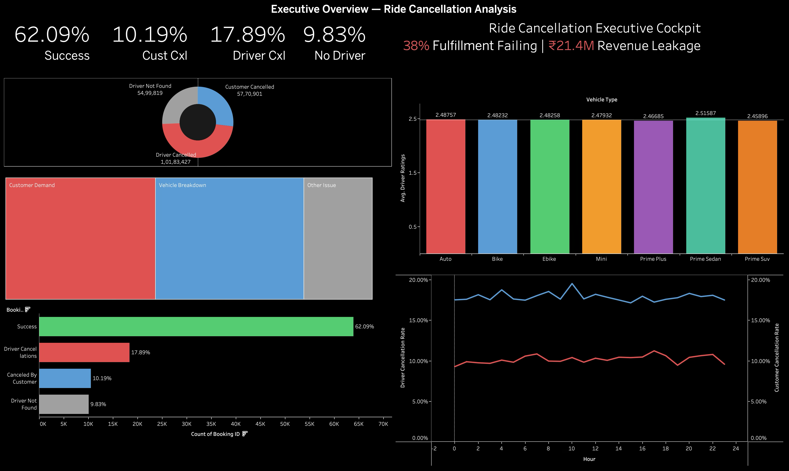
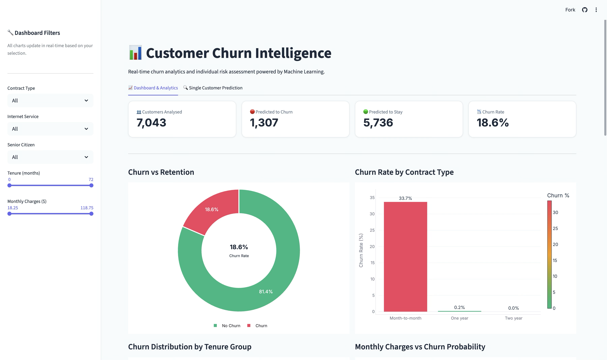
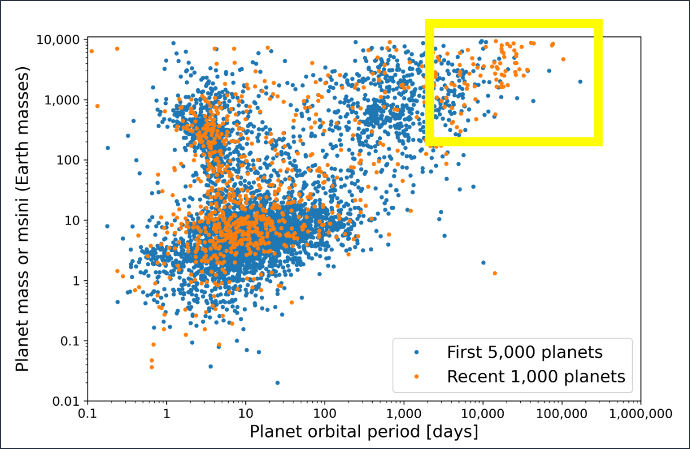

Public
End-to-end analysis of ride-hailing datasets to uncover cancellation patterns, peak demand zones, and pricing inefficiencies.

Public
AI agent that identifies at-risk customers using behavioral signals and autonomously triggers personalized re-engagement workflows.

Public
ML classification pipeline on NASA's Kepler dataset - identifying exoplanet candidates using orbital and stellar features with EDA and model comparison.
No repositories match your search or filter.
Rudraksh's GitHub Contributions